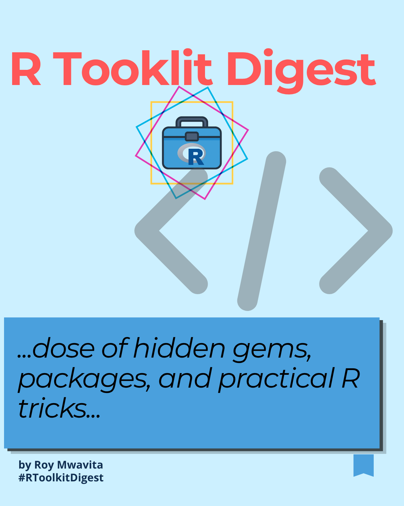

Roy Mwavita
Research Data Analyst • Monitoring & Evaluation Specialist
2+ years of experience turning program data into actionable insights for public health, research and development programs.

R Toolkit Digest
A collection of practical lessons learned while working with R for data analysis, data visualization, and Monitoring, Evaluation, Accountability, and Learning (MEAL) systems.
Each issue breaks down real-world techniques used in operational reporting dashboards, custom data transformation pipelines, and dynamic programmatic workflows.
📊 Issue 1
Small ggplot2 Tricks That Make Better Charts
- Grammar of Graphics rules
- Optimizing
geom_col()bars - Custom fill palettes & aesthetics
- Polishing alignments via
position_dodge()
A practical engineering guide on improving the structural clarity, contrast mapping, and overall visual communication impact of bar charts in ggplot2.
📊 Issue 2
Understanding pivot_longer() and pivot_wider()
- Structural data reshaping concepts in R
- Converting wide profiles to relational long formats
- Advanced tidyverse engineering pipelines
A comprehensive functional guide demonstrating how to dynamically transform messy, non-relational survey datasets for fast downstream modeling and visualization.
📊 Issue 3
Factors and Ordering Categories in ggplot2
- Deep dive into vector factors in R
- Explicitly setting and sorting structural factor levels
- Controlling explicit category mapping scales in ggplot2
- Creating clear, ordered Likert-scale visualization distributions
A structural analytics guide to managing vector factors to systematically control how categorical groups organize themselves in tables and visualization grids.
📊 Issue 4
Do More with Less Code in the Tidyverse
- Applying
across()to mutate multiple metrics simultaneously - Using functional loops via
map()to eliminate manual code loops - Deploying
reduce()to join collection lists efficiently - Writing clean, performant, and maintainable tidyverse scripts
An efficiency manual breaking down methods for reducing code replication by programmatically looping transformations across data frame shapes and complex arrays.